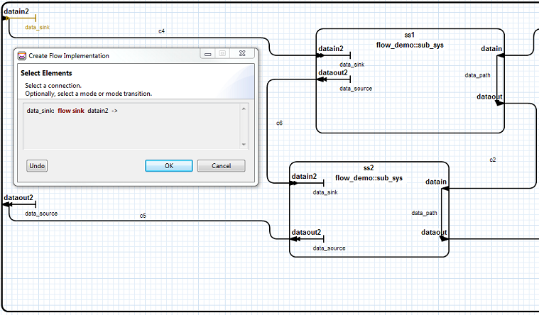

The graphical editor supports creating and editing flow specifications, flow implementations, and end-to-end flows.
Flow paths, flow sinks, and flow sources can be created using the palette when editing a component type.

Select Flow Path from the palette.
Select the feature to use as the start of the flow path.
Select the feature to use as the end of the path. The new flow path will appear.
Select Flow Sink from the palette.
Select the feature to use as the sink. The new flow sink will appear.
When editing a component implementation, flow implementations and end-to-end flows can be created using the Create Flow Implementation and Create End-To-End Flow buttons on the toolbar and selecting valid elements on the diagram. If the selected element is valid, the starting flow specification will highlight dark orange, while flow elements highlight purple. The Undo button will remove the elements in the order they were selected.
Select Create Flow Implementation from the toolbar, the dialog will appear.
Select a valid source flow specification.

Select a valid subcomponent flow specification, subcomponent, or data access.

Select valid flow segments leading to the source flow specification. Optionally, select modes or mode transitions.

Select OK when done.
Select a valid sink flow specification.
Select a valid connection.

Select valid flow segments leading to the end subcomponent flow. Optionally, select modes or mode transitions.

Select OK when done.


Select Create End-To-End Flow from the toolbar, the dialog will appear.
Select a valid subcomponent source flow specification.

Select a valid connection.

Select valid flow segments. Optionally, select modes or mode transitions.

Name the End-To-End Flow and select OK when done.
When editing a component implementation, flow implementations and end-to-end flow can be edited using the flow editor. It can be accessed by right-clicking in the diagram and selecting Edit Flows... from the context menu.